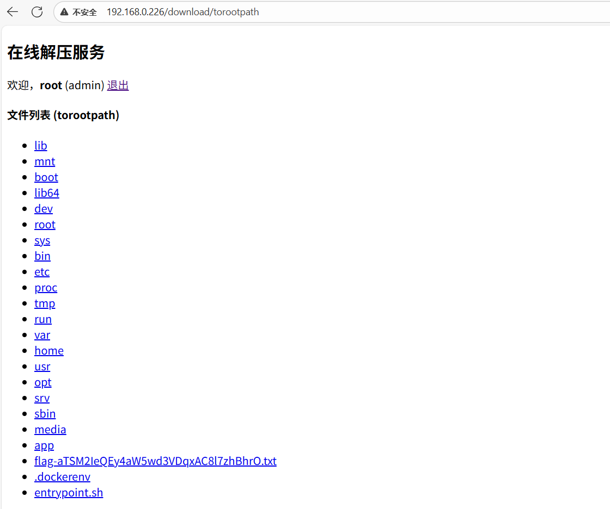
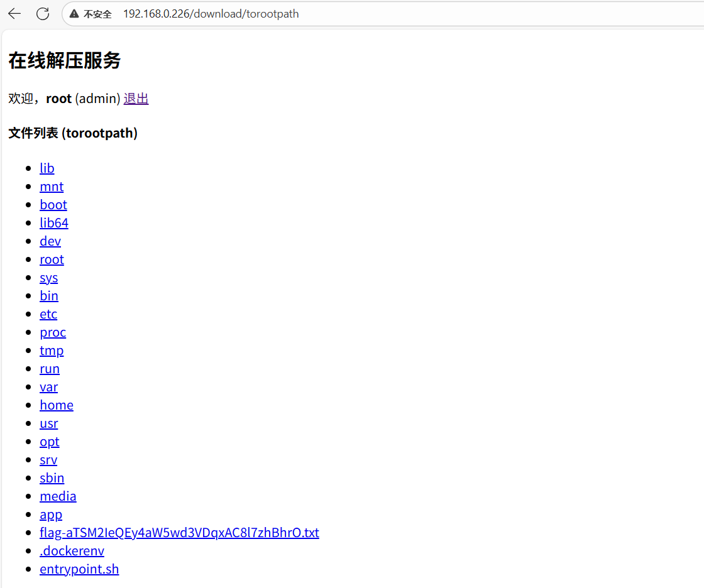

1
2
3
4
5
6
7
8
9
10
11
12
13
14
15
16
17
18
19
20
21
22
23
24
25
26
27
28
29
30
31
32
33
34
35
36
37
38
39
40
41
42
43
44
45
46
47
48
49
50
51
52
53
54
55
56
57
58
59
60
61
62
63
64
65
66
67
68
69
70
71
72
73
74
75
76
77
78
79
80
81
82
83
84
85
86
87
88
89
90
91
92
93
94
95
96
97
98
99
100
101
102
103
104
105
106
107
108
109
110
111
112
113
114
115
116
117
118
119
120
121
122
123
124
125
126
127
128
129
130
131
132
133
134
135
136
137
138
139
140
141
142
143
144
145
146
147
148
149
|
import socket
import os
import hashlib
import fcntl
import re
import mmap
with open('flag.txt', 'rb') as f:
flag = f.read()
mm = mmap.mmap(-1, len(flag))
mm.write(flag)
os.remove('flag.txt')
FORBIDDEN = [b'flag', b'proc', b'<', b'>', b'^', b"'", b'"', b'..', b'./']
PAGE = """<!DOCTYPE html>
<html lang="en">
<head>
<meta charset="UTF-8">
<meta name="viewport" content="width=device-width, initial-scale=1.0">
<title>Secure Gateway</title>
<style>
body { font-family: 'Courier New', monospace; background-color: #0c0c0c; color: #00ff00; text-align: center; margin-top: 10%; }
.container { border: 1px solid #00ff00; padding: 2rem; display: inline-block; }
h1 { font-size: 2.5rem; text-shadow: 0 0 5px #00ff00; }
p { font-size: 1.2rem; }
.status { color: #ffff00; }
</style>
</head>
<body>
<div class="container">
<h1>Firewall</h1>
<p class="status">STATUS: All systems operational.</p>
<p>Your connection has been inspected.</p>
</div>
</body>
</html>"""
def handle_connection(conn, addr, log, factor=1):
try:
conn.settimeout(10.0)
if log:
with open('log.txt', 'a') as f:
fcntl.flock(f, fcntl.LOCK_EX)
log_bytes = f"{addr[0]}:{str(addr[1])}:{str(conn)}".encode()
for _ in range(factor):
log_bytes = hashlib.sha3_256(log_bytes).digest()
log_entry = log_bytes.hex() + "\n"
f.write(log_entry)
request_data = conn.recv(256)
if not request_data.startswith(b"GET /"):
response = b"HTTP/1.1 400 Bad Request\r\n\r\nInvalid Request"
conn.sendall(response)
return
try:
path = request_data.split(b' ')[1]
pattern = rb'\?offset=(\d+)&length=(\d+)'
offset = 0
length = -1
match = re.search(pattern, path)
if match:
offset = int(match.group(1).decode())
length = int(match.group(2).decode())
clean_path = re.sub(pattern, b'', path)
filename = clean_path.strip(b'/').decode()
else:
filename = path.strip(b'/').decode()
except Exception:
response = b"HTTP/1.1 400 Bad Request\r\n\r\nInvalid Request"
conn.sendall(response)
return
if not filename:
response_body = PAGE
response_status = "200 OK"
else:
try:
with open(os.path.normpath(filename), 'rb') as f:
if offset > 0:
f.seek(offset)
data_bytes = f.read(length)
response_body = data_bytes.decode('utf-8', 'ignore')
response_status = "200 OK"
except Exception as e:
response_body = f"Invalid path"
response_status = "500 Internal Server Error"
response = f"HTTP/1.1 {response_status}\r\nContent-Length: {len(response_body)}\r\n\r\n{response_body}"
conn.sendall(response.encode())
except Exception:
pass
finally:
conn.close()
os._exit(0)
def main():
server = socket.socket(socket.AF_INET, socket.SOCK_STREAM)
server.setsockopt(socket.SOL_SOCKET, socket.SO_REUSEADDR, 1)
server.bind(('0.0.0.0', 1337))
server.listen(50)
print(f"Server listening on port 1337...")
while True:
try:
pid, status = os.waitpid(-1, os.WNOHANG)
except ChildProcessError:
pass
conn, addr = server.accept()
initial_data = conn.recv(256, socket.MSG_PEEK)
if any(term in initial_data.lower() for term in FORBIDDEN):
conn.sendall(b"HTTP/1.1 403 Forbidden\r\n\r\nSuspicious request pattern detected.")
conn.close()
continue
if initial_data.startswith(b'GET /?log=1'):
try:
factor = 1
pattern = rb"&factor=(\d+)"
match = re.search(pattern, initial_data)
if match:
factor = int(match.group(1).decode())
pid = os.fork()
if pid == 0:
server.close()
handle_connection(conn, addr, True, factor)
except Exception as e:
print("[ERROR]: ", e)
finally:
conn.close()
continue
else:
pid = os.fork()
if pid == 0:
server.close()
handle_connection(conn, addr, False)
conn.close()
if __name__ == '__main__':
main()
|
 
